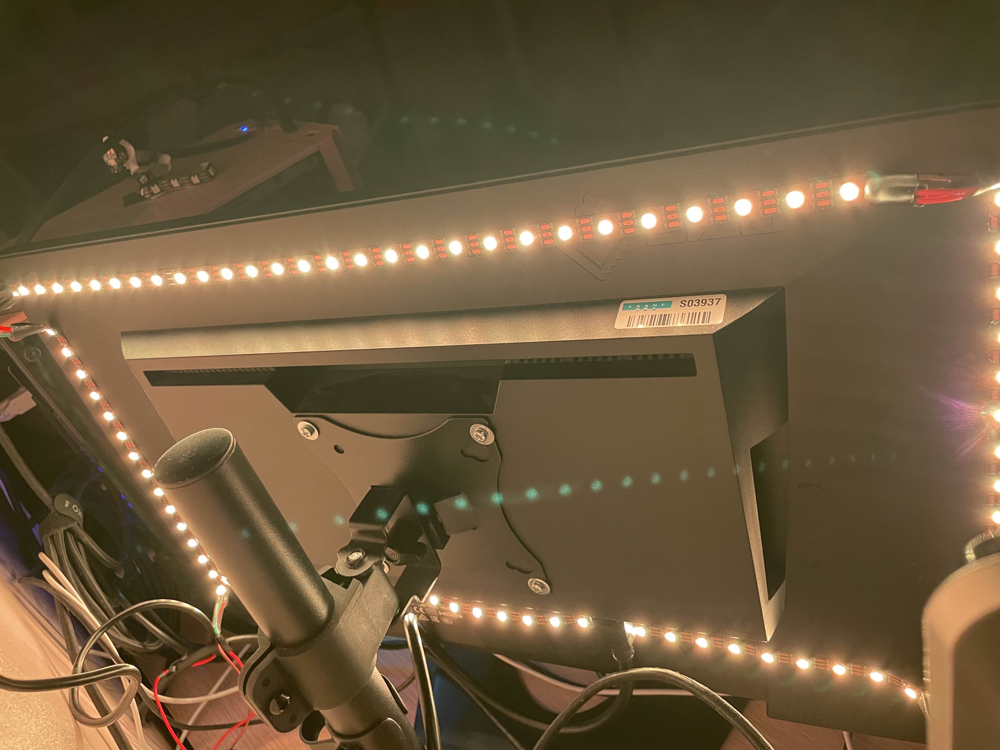
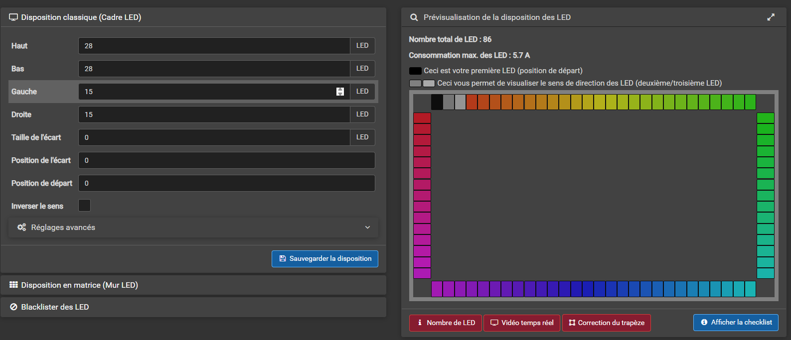

Projet Ambilight
Présentation du Projet
Dans le cadre de mes projets personnels en BTS CIEL, j'ai conçu et réalisé un système d'éclairage biaisé dynamique (communément appelé "Ambilight") pour mon moniteur principal EIZO de 24 pouces.
L'objectif était de créer une solution open-source et économique capable d'analyser l'image affichée à l'écran en temps réel et de projeter les couleurs correspondantes sur le mur arrière.
Ce système améliore l'immersion dans les jeux et les films, tout en réduisant la fatigue visuelle en diminuant le contraste entre la dalle lumineuse et l'environnement sombre.

Architecture Technique et Matériel
Contrairement aux solutions commerciales "clés en main", ce projet repose sur une architecture IoT (Internet of Things) utilisant un microcontrôleur Wi-Fi pour piloter des LEDs adressables individuellement.
Liste des Équipements (Hardware)
- Contrôleur : Wemos D1 Mini (ESP8266) pour sa connectivité Wi-Fi et sa gestion du protocole UDP.
- Éclairage : Ruban LED WS2812B (60 LEDs/mètre).
Configuration : 86 LEDs au total (28 haut/bas, 15 côtés). - Alimentation : Bloc externe 5V 3A, dimensionné pour la charge maximale.
- Câblage : Fils 20AWG pour éviter les chutes de tension.
Stack Logicielle (Software)
- Firmware (Embarqué) : WLED flashé sur le Wemos D1 Mini.
- Capture (PC) : Logiciel Prismatik (Windows) pour l'analyse d'image et l'envoi des paquets de données.
Réalisation et Mise en Place
1. Le Défi de l'Alimentation (Sécurité)
L'un des principaux défis a été de garantir une alimentation stable et sécurisée pour les LEDs, surtout lors de scènes très lumineuses. J'ai opté pour un bloc d'alimentation externe de qualité, et j'ai veillé à respecter les normes de sécurité électriques en utilisant des câbles adaptés et en isolant correctement les connexions.


2. Installation et Configuration
Après avoir flashé le Wemos D1 Mini avec le firmware WLED, j'ai configuré les paramètres réseau pour permettre la communication avec le logiciel Prismatik sur mon PC. J'ai ensuite installé les LEDs autour du moniteur en suivant une disposition optimisée pour une couverture maximale.
Une fois l'installation physique terminée, j'ai ajusté les paramètres de Prismatik pour assurer une synchronisation fluide entre l'image affichée et les couleurs projetées, en optimisant les délais de transmission et la précision des couleurs.
Résultats et Conclusion
Le projet Ambilight a été un succès, offrant une expérience immersive améliorée lors de l'utilisation de mon moniteur. Les couleurs projetées correspondent fidèlement à l'image affichée, créant une ambiance visuelle agréable et réduisant la fatigue oculaire.
Ce projet m'a permis de développer mes compétences en électronique, en programmation embarquée, et en intégration de systèmes IoT, tout en respectant les contraintes de sécurité et de budget.
Cependant j'ai eu quelques difficultés techniques liées au soudage des composants électroniques. En effet ceci étais ma première expérience avec l'électronique et le soudage. J'ai dû améliorer mes techniques de soudage et de gestion des câbles pour garantir une meilleure qualité de connexion.